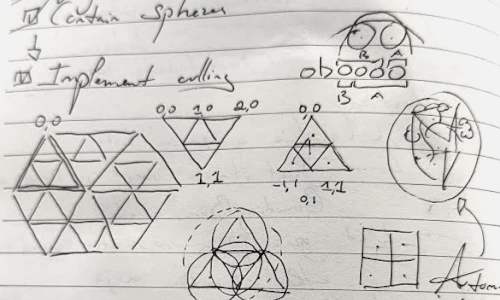

The entire scene in the game is subdivided into a triangular grid, and grid cell visibility is calculated using a simple method that projects the view area onto a flat plane and determine which grid cells are inside it. This worked fairly well for flat test worlds, but since I've implemented hills, this no longer works well. When looking down a hill, more cells between the camera and the horizon are visible, and when I'm looking at a slope that goes up, the opposite thing happens. The grid cells will soon contain plants too, which increases the visible area of a cell, so a new culling method (determining whether grid cells are visible or not) was needed. There are a few requirements:

To support the first requirement, every grid cell gets a sphere which contains all its contents. Sphere are very fast to work with mathematically, but they also have an extra benefit: when I add a tree to a cell, it becomes much taller than wide. The tree will almost always branch outside the triangular area of the cell near the top. Because a sphere is fit around the cell volume, these branches will automatically be included in the cell's bounding volume, without complicating the culling algorithm further.
To make the algorithm scale, I've implemented a bounding volume hierarchy, which works as follows:
This method is extremely fast. Instead of testing every cell for visibility every frame (which doesn't scale for larger scenes), this algorithm tests approximately the same number of cells per frame regardless of the total number of cells in the scene. The algorithm means world size is not limited by culling performance, and I don't have to worry about either performance or accuracy.
While working on the grid systems, I've built a more efficient system that tracks visibility of objects in the scene. Two types of objects exists:
Most objects will fall into the first category, which is great for performance, because these draw lists are built by the GPU.
A final performance optimization is that the culling algorithm only runs when the camera has moved, or when any of the spheres changes when objects are added to or removed from the scene. This is very convenient when players are not moving through the world but working in the interface; while rendering and updating the interface consumes performance budget, some performance is saved by not culling the scene behind it.
I'm actually surprised by how fast this runs. The performance impact is negligible on desktop platforms, and slower devices like the Switch also have very little trouble with it, which means they can render larger scenes than I initially anticipated.